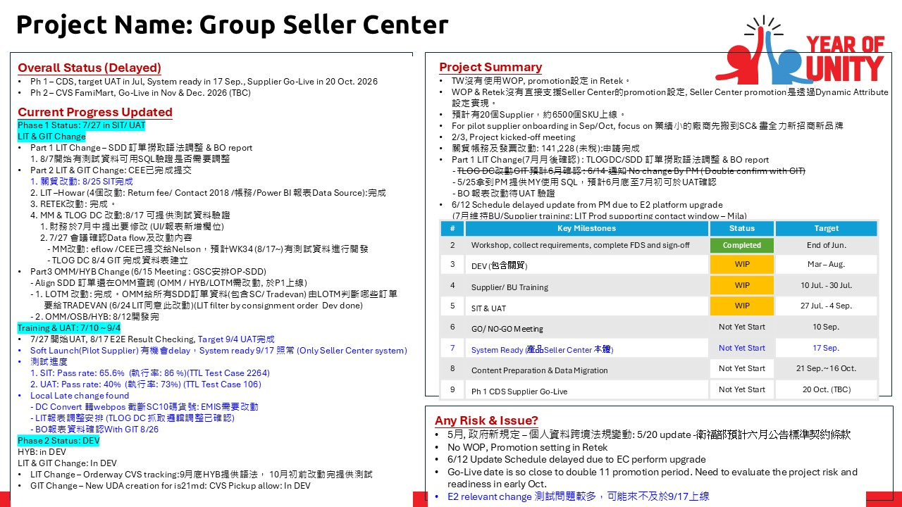
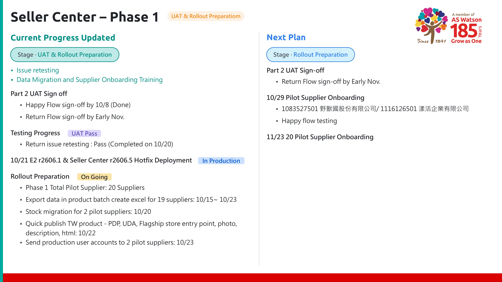

PORTFOLIO SAMPLE
🤖 智能週報 Agent - 設計框架與實作
從自動化工作流架構到最終使用者介面的完整解決方案
📥 資料來源
📝 Confluence
提取每週專案文字、表格、圖片等資料，作為週報生成的核心數據。
Data
🔐 API 串接
需授權 Token 後傳送資料，可下指令或排程抓取資料到 AI 進行生成。
Request
▼
🧠 Agent 核心處理
📋 定義標準欄位
輸出結構化 PPT 與 HTML，包含本週進度、潛在風險、下週計畫、附件。
Define
📐 設計產出樣式
分析內容長度、形式(文字、連結、表格、圖片、標籤)、區塊類型等組合排版
Design
✨ 資料清洗與生成
過濾無效資訊，將資料轉為精簡、美觀且具有洞察力的條列式報告。
Generate
▼
📤 產出與通知
⏰ 定時排程
每週固定時間自動產出，無需人工干預
💾 本機留存
將產出的 PPT / HTML / 圖檔報告儲存於本機。
Local Save
☁️ 同步 OneDrive
自動上傳至團隊共用資料夾，確保版本同步。
Cloud Sync
📧 自動寄信通知
將報告連結 / 附件寄送至 PM 與 Stakeholders。
Email
自動化的好處？
透過線上管理工具撰寫進度，提升共用性、即時性，並使用 Agent 定義好的格式與樣式，確保輸出的一致性。每週可節省 0.5-1 小時，不必再人工進行報告編排與修改
📊 產出成果對比 (Before / After)

🔍 2 張
🔍 4 張💬 模擬 Agent 操作介面
⏰ 情境一：排程時間到，自動生成
智能週報助手 (Weekly Report Agent)
⏰ 排程自動執行
📝 Confluence
此為排程自動執行，無需輸入指令...
👤 情境二：手動下指令對話
智能週報助手 (Weekly Report Agent)
📝 Confluence
輸入指令，例如：「/generate-meeting-minutes W43 PPT」...